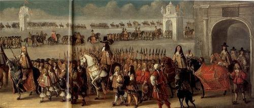
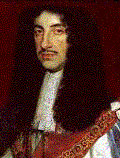
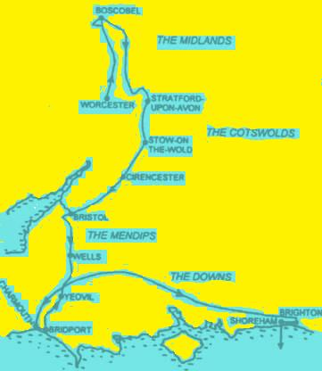

The Twenty-Ninth of May
Restoration and Birthday of King Charles II.
Restauration et anniversaire du roi Charles II
From "The True Loyalist", page 23, 1779
Followed by a Whig song to the same tune - Suivi d'un chant Whig sur le même timbre
Tune - Melodie"The 29th of May"
Alternative Tune
"Alloway -house" (as stated in Ritson's "Scotish Songs" Vol II, p.105, 1794)
(See "Jacobite Reliques" II, N°28, page 57)
Sequenced by Christian Souchon

|
To the title: The air was published in Playford's "Dancing Master" of 1686 and all later editions, sometimes even appearing twice, with different names (such as "The Jovial Beggars"). It also appears in Playford’s "Apollo’s Banquet". The title date refers to the day Charles II landed in England in the year 1660 to be returned to the crown. An act of Parliament later that same year decreed the date should be a day of thanksgiving, to “be celebrated in every church and chapel in England and the dominions thereof.” It was observed until 1859. The date, probably by design, happened to be the king’s birthday as well as his return day. An imitation of this anthem, in praise of King William, is found in a very different (Whig) "Collection of Loyal Songs for the use of the Revolution Club" published in Edinburgh in 1749 and 1761. Source "The Fiddler's Companion" (see Links). |
A propos du titre: Cet air fut publié dans le "Maître à danser" de Playford en 1688 et dans toutes les éditions suivantes, parfois en double, sous des titres différents, ainsi que dans son "Banquet d'Apollon". Le titre fait référence au débarquement de Charles II en Angleterre, en 1660 et à son retour sur le trône. La même année un acte du Parlement faisait de cette date une journée d'action de grâces "à célébrer dans toutes les églises et chapelles d'Angleterre et de ses dominions". L'usage fut maintenu jusqu'en 1859. La date coïncide, sans doute à dessein, avec l'anniversaire du roi. Une imitation de cet hymne, dédiée à la gloire du roi Guillaume, existe dans un recueil d'une tout autre orientation (Whig): "Recueil de chants loyalistes à l'usage du Club de la Révolution", publié à in Edimbourg en 1749 et 1761. Source "The Fiddler's Companion" (cf. liens). |
Sheet music- Partition

|
THE TWENTY-NINTH OF MAY CHORUS: Your glasses charge high, 'tis in great Charles' praise! In praise, in praise, 'tis in great Charles' praise ; To's success your voices and instruments raise, To his success your voices and instrunents raise! 1. To curb usurpation by th' assistance of France, With love to his country see Charles (ie) advance ! He's welcome to grace and distinguish this day, The sun brighter shines, and all nature? looks gay. 2. Approach glorious Charles, to this desolate land, And drive out thy foes with thy mighty hand; The nations shall rise? and join as one man, To crown the brave Charles, the Chief of the Clan. Your glasses, &c. 3. In his (s)train(s) see sweet Peace fairest queen of the sky, Ev'ry bliss in her look ev'ry charm in her eye, With oppression, corruption, vile slav'ry and fear, At his wish'd-for return never more shall appear. Your glasses, &c. 4. Whilst in pleasure's soft arms millions now court repose, Our hero flies forth though surrounded with foes; To free us from tyrants ev'ry danger defies And in liberty's cause, he conquers or dies ! Your glasses, &c. 5. How hateful 's the tyrant who lives by false fame, To satiate his pride sets our country in flame, How glorious the prince, whose great generous mind, Makes true valour consist in relieving mankind! Your glasses, &c. 6. Ye brave clans, on whom we just honour bestow, O think on the source whence our dire evils flow! Commanded by Charles, advance to Whitehall, And fix them in chains who would Britons enthral. Your glasses, &c. Source: Jacobite Minstrelsy, published in Glasgow by R. Griffin & Cie and Robert Malcolm, printer in 1828. |
LE VINGT-NEUF MAI REFRAIN: Au grand roi Charles levez vos verres! Qu'ils soient pleins à ras bord! Qu'à vos voix Les instruments mêlent leur tonnerre Pour souhaiter succès à votre roi! 1. La France lui prête assistance, Pour chasser l'intrus, vois, c'est pour l'amour De son peuple qu'avec gloire Charles s'avance Le soleil darde ses rayons alentour. 2. Viens vers ces rives désolées! Chasse tes ennemis, O roi puissant! On verra les nations pour t'aider assemblées Couronner Charles le Brave, chef des Clans. Au grand roi etc. 3. La Paix, trônant sur un nuage, Orne son cortège de ses attraits. Oppression, corruption, peur et vil esclavage Suivent, que son retour enchaîne à jamais. Au grand roi etc. 4. Quand dans la joie tous se prélassent, Il affronte l'ennemi sans frémir. Il défie les dangers. Les tyrans il terrasse. Pour nous affranchir, il veut vaincre ou mourir! Au grand roi etc. 5. Maudit le tyran qui par gloriole Immola notre pays par le feu! Gloire au prince dont les actes et les paroles Tendent au seul but: rendre son peuple heureux! Au grand roi etc. 6. Vous les clans, nobles hommes-liges, Empêchez tous nos maux de ressurgir! Charles jusqu'à Whitehall en tête vous dirige. Enchaînez ceux qui voudraient nous asservir! Au grand roi etc. (Trad. Ch.Souchon(c)2009) |
AN ANTHEM IN PRAISE OF KING WILLIAM CHORUS: Your glasses charge high, 'tis in brave William's praise! In praise, in praise, 'tis in brave William's praise ; To his glory your voices, to his glory your voices, To his glory your voices and instrunents raise! 1. From scourging rebellion and baffling proud France, Crown'd with laurels, behold British William advance! His triumph to grace and distinguish this day, The sun brighter shines, and all nature? looks gay. 4. Whilst in pleasure's soft arms others courted repose, Our hero flew forth though the streams round him froze; [1] To shield us from rebels, all dangers defied And would conquer or die by fam'd liberty's side! Your glasses, &c. 3. In his train see sweet Peace, fairest offspring of sky, Ev'ry bliss in her smile, ev'ry charm in her eye, Whilst the worst foe to man, that dire fiend, civil war Gnashing horrid her teeth, comes fast bound to his car. Your glasses, &c. 5. How hateful's the tyrant who lur'd by false fame, To satiate his pride sets the world in a flame! How glorious our king, whose beneficient mind, Makes true grandeur consist in protecting mankind! Your glasses, &c. 6. Ye warriors, on whom we due honours bestow, O think on the source whence our late evils flow! Commanded by William, strike next at the Gaul, [2] And fix those in chains who would Britons enthral. Your glasses, &c. [1] William landed at Brixham in southwest England on 5 November 1688. [2] Louis XIV, whom England combated as a member of the Grand Alliance. Source: "A Collection of Loyal Songs. For the Use of the Revolution Club. Some of which never before printed (Edinburgh: Robert Fleming, 1748 and 1749. |
HYMNE A LA GLOIRE DU ROI GUILLAUME REFRAIN: Au grand Guillaume levez vos verres! Qu'ils soient pleins à ras bord! Qu'à vos voix Les instruments mêlent leur tonnerre Pour souhaiter succès à votre roi! 1. Vils factieux, impudente France, Voyez Guillaume l'Anglais couronné De lauriers qui fête son triomphe et s'avance, Et le soleil darde ses rayons dorés. 4. Alors que d'autres se prélassent Dans les bras des plaisirs, lui, courageux S'est levé, bien qu'autour de lui les eaux gelassent, [1] Risquant tout, pour nous protéger des factieux! Au grand etc. 3. La Paix, du ciel plus belle fille Orne son cortège, douce, enjouée. Tandis que, pire des maux, la guerre civile Grincant des dents suit, à son char enchaînée. Au grand etc. 5. Maudit tyran qui par gloriole Au monde tentas de mettre le feu! Gloire à ce roi dont les pensées et les paroles Tendent au seul but: rendre le monde heureux! Au grand etc. 6. Vous guerriers qu'il faut qu'on honore, Regardez d'où nos maux ont pu surgir! Guillaume à votre tête, il faut frapper encore Le Gaulois [2] qui brûlait de nous asservir! Au grand etc. [1] Guillaume débarqua à Brixham dans le sud-ouest de l'Angleterre le 5 Novembre 1688. [2] Louis XIV que l'Angleterre combattait au sein de la Grande Alliance. (Trad. Ch.Souchon(c)2012) |
|
CHARLES II
 Charles II, second son of Charles I and Henrietta Marie of France, daughter of Henry IV, King of France, was born in 1630. He spent his teenage years fighting Parliament's Roundhead forces until his father's execution in 1649, when he escaped to France. He drifted to Holland, but returned to Scotland in 1650 amid the Scottish proclamation of his kingship; in 1651, he led a Scottish force of 10,000 into a dismal defeat by Cromwell's forces at Worcester. He escaped (Boscobel Oak episode), but remained a fugitive for six weeks until he engineered passage to France. Charles was extremely tolerant of those who had condemned his father to death: only nine of the conspirators were executed. He was also tolerant in religious matters. England was overjoyed at having a monarch again. However, royal powers and privileges had been severely limited by Parliament. His reign was a turning point in English political history, as Parliament maintained a superior position to that of the king, and the modern concept of political parties formed from the ashes of the Cavaliers and Roundheads. The 1670's saw Charles' forging a new alliance with France against the Dutch. French support was based on the promise that Charles would reintroduce Catholicism in England at a convenient time - which only caused him to make a deathbed conversion to the Roman faith. The Whigs used Catholicism to undermine Charles; England was in the throes of yet another wave of anti-Catholicism, with the Whigs employing this paranoia in an attempt to unseat the heir apparent, Charles' Catholic brother James, from succeeding to the throne. Many accused Anthony Cooper, Earl of Shaftsbury and founder of the Whig Party, of inciting the anti-Catholic violence of 1679-80; this has remained one of the greatest mysteries in British history. The Whig-dominated Parliament tried to push through an Exclusion Bill barring Catholics from holding public office (and keeping James Stuart from the throne), but Charles was struck down by a fever and opinion swayed to his side. His last years were occupied with securing his brother's claim to the throne and garnering Tory support.
Charles' era is remembered as the time of "Merry Olde England". The monarchy, although limited in scope, was successfully restored. Charles' tolerance was astounding considering the situation of England at the time of his ascension. He was intelligent and a patron of arts and scientific research. |
CHARLES II
Charles II, second fils de Charles I et d'Henriette-Marie de France, fille du roi de France Henri IV, est né en 1630. Il passa son adolescence à combattre les forces parlementaires, les Têtes Rondes jusqu'à l'exécution de son père en 1649 et son départ pour la France. On le retrouve en Hollande, puis en Ecosse en 1650 lors de la déclaration par l'Ecosse de sa qualité de roi; en 1651, il subit à la tête d'une armée écossaise de 10.000 hommes une désastreuse défaite devant les troupes de Cromwell à Worcester. Il parvint à s'échapper (épisode du chêne de Boscobel), mais dut se cacher pendant six semaines jusqu'à ce qu'il puisse organiser son évasion vers la France. Charles se montra extrêmement tolérant envers ceux qui avaient condamné à mort son père: neuf conspirateurs seulement furent exécutés. Tolérant, il le fut aussi dans les questions religieuses. L'Angleterre était enchantée d'avoir à nouveau un monarque. Toutefois les privilèges et les pouvoirs du roi étaient maintenant étroitement limités par le parlement. Son règne marqua un tournant dans l'histoire politique anglaise, car c'est alors que le parlement affirma sa domination sur le roi et que le concept moderne de partis politiques naquit des cendres des Cavaliers et des Têtes Rondes. Les années 1670 virent Charles forger une nouvelle alliance avec la France contre les Hollandais. L'appui français reposait sur la promesse faite par Charles de réintroduire le catholicisme en Angleterre, le moment venu - ce qui eut pour seul effet qu'il se convertit à la foi romaine sur son lit de mort. Les Whigs se servirent de l'épouvantail catholique pour saper l'autorité de Charles; l'Angleterre était la proie d'une nouvelle vague d'anticatholicisme et les Whigs exploitèrent cette psychose pour essayer de disqualifier l'héritier présumé du trône, Jacques, le frère catholique de Charles. Beaucoup accusèrent Anthony Cooper, Comte de Shaftsbury et fondateur du parti Whig, d'être l'instigateur des violences anticatholiques de 1679-80; c'est un des mystères de l'histoire britannique qui n'est toujours pas élucidé. Le parlement dominé par les Whigs essaya de faire voter une Loi d'Exclusion qui écartait les Catholiques des charges publiques (et écartait Jacques Stuart du trône), mais Charles tomba gravement malade et l'opinion publique pencha en sa faveur. Il consacra les dernières années de sa vie à légitimer les prétentions au trône de son frère et à s'assurer de l'appui des Tories.
L'ère de Charles reste dans les souvenirs comme celle de la "Merry Olde England". La monarchie avait été restaurée avec succès même si son importance avait décru. La tolérance de Charles a de quoi surprendre quand on songe à la situation de l'Angleterre quand il arriva au pouvoir. Charles fut aussi un intelligent protecteur des arts et des sciences. |

Future King Charles II's escape to France (Sept. 1651)